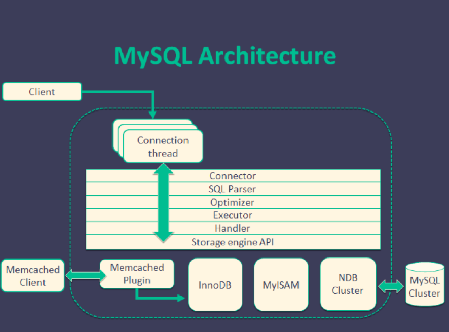
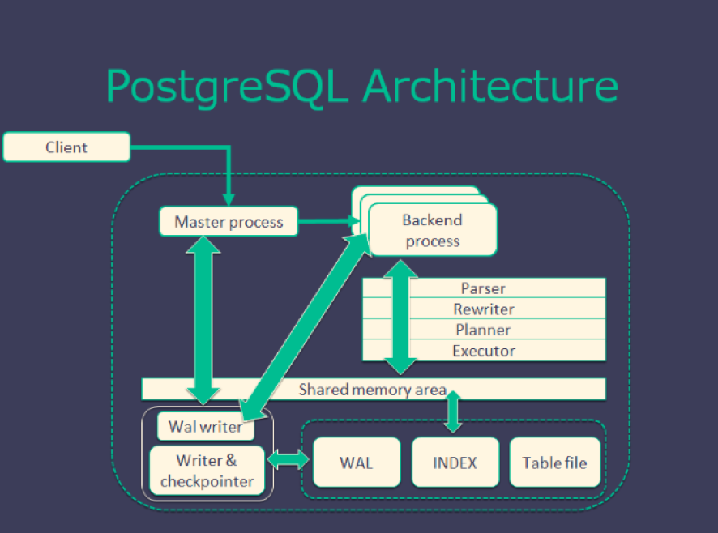
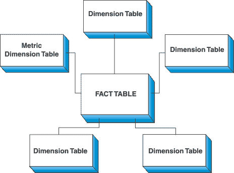
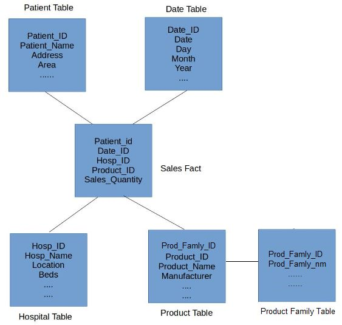
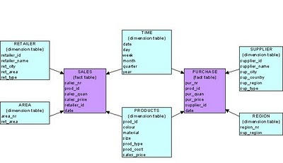
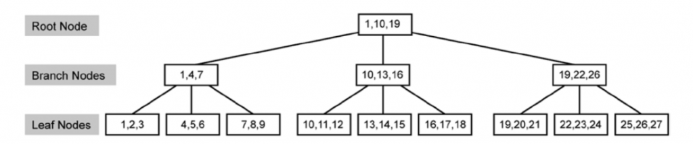

Faq DB DW
Last updated: Feb 23, 2024Table of Contents
- 1) DB type
- 2) DB properties
- 3) DB design
- 4) Index
- 5) DB tuning
- 6) DB managment
- 7) Case study
- 10) Clustered indexing
- 11) Indexing
- 13) normalization, denormalization
- 14) SQL performance tuning
- 15) Data model examples ?
- 16) What do you understand by data mart?
- 17) Explain SQL keys ?
- 18) DB normalization VS Denormalization
- 19) Index pros and cons
- 20) Mysql Index
- Ref
DB, DW FAQ
1) DB type
- RDBMS (SQL) (Relational Database Management System)
-
MySQL
- ACID Compliance : Some versions are compliant
- SQL Compliance : Some versions are compliant
- Widely chosen for web based projects that need a database simply for straightforward data transactions. Though, for MySQL to underperform when strained by a heavy loads or when attempting to complete complex queries.
- MySQL performs well in OLAP/OLTP systems when read speeds are required.
- MySQL + InnoDB provides very good read/write speeds for OLTP scenarios. Overall, MySQL performs well with high concurrency scenarios.
- MySQL is reliable and works well with Business Intelligence applications, as business intelligence applications are typically read-heavy.
- MySQL has JSON data type support but no other NoSQL feature. It does not support indexing for JSON
- Supports temporary tables but does not support materialized views.
-
PostgreSQL
- ACID Compliance : Complete ACID Compliance
- SQL Compliance : Almost fully compliant
- Widely used in large systems where read and write speeds are crucial and data needs to validated. In addition, it supports a variety of performance optimizations that are available only in commercial solutions such as Geospatial data support, concurrency without read locks, and so on (e.g. Oracle, SQL Server).
- PostgreSQL performance is utilized best in systems requiring execution of complex queries.
- PostgreSQL performs well in OLTP/OLAP systems when read/write speeds are required and extensive data analysis is needed.
- PostgreSQL also works well with Business Intelligence applications but is better suited for Data Warehousing and data analysis applications that require fast read/write speeds.
- PostgreSQL supports JSON and other NoSQL features like native XML support and key-value pairs with HSTORE. It also supports indexing JSON data for faster access.
- Supports materialized views and temporary tables.
-
MySQL VS PostgreSQL
- Architecutre


- License
- Development style
- MySQL :
- Multi-threading
- customized storage engine make saving data more flexible
- Can use
INSERTcommand save data to memcached - Can update data from slave server (cluster)
- PostgreSQL :
- Multi-processing
- data need to be saved at RDBMS (follow strong rules)
- Can’t update data from slave server (cluster)
- MySQL :
- Ref
- Architecutre
-
MSSQL/DB2/Oracle/SQLITE…
-
- No SQL
- MongoDB
- Redis
- Others
2) DB properties
- RDBMS
- ACID : atomicity, consistency, isolation, and durability
-
Atomicity
- Guarantee that either all of the transaction succeeds or none of it does. You don’t get part of it succeeding and part of it not. If one part of the transaction fails, the whole transaction fails. With atomicity, it’s either “all or nothing”.
-
Consistency
- This ensures that you guarantee that all data will be consistent. All data will be valid according to all defined rules, including any constraints, cascades, and triggers that have been applied on the database.
-
Isolation
- Guarantees that all transactions will occur in isolation. No transaction will be affected by any other transaction. So a transaction cannot read data from any other transaction that has not yet completed.
-
Durability
- Once transaction is committed, it will remain in the system – even if there’s a system crash immediately following the transaction. Any changes from the transaction must be stored permanently. If the system tells the user that the transaction has succeeded, the transaction must have, in fact, succeeded.
-
- ACID : atomicity, consistency, isolation, and durability
3) DB design
-
Process
-
Concept
-
STAR SCHEMA
- With star shape,
FACT tableas the star center, while others aredimension tablewhich give describe the attribution of FACT table. Dimension tablesare independent with each other
- With star shape,
-
SNOWFLAKE SCHEMA
- Is an extension of STAR SHEMA actually
FACT tableat center,dimension tableat the rest, the difference is that :dimension tableis extenable. i.e. can track multiplesdimension tabletogether- Pro : Can split the data count at each dimension table -> fast operation like
join - Con : Have to maintain extra tables

-
GALAXY SCHEMA
- Galaxy schema contains many fact tables with some common dimensions (conformed dimensions). This schema is a combination of many data marts.

- Galaxy schema contains many fact tables with some common dimensions (conformed dimensions). This schema is a combination of many data marts.
-
Example
4) Index
-
What’s database index ?
-
A database index is a data structure that improves the speed of data retrieval operations on a database table at the cost of additional writes and storage space to maintain the index data structure. Indexes are used to quickly locate data without having to search every row in a database table every time a database table is accessed. Indexes can be created using one or more columns of a database table, providing the basis for both rapid random lookups and efficient access of ordered records.
-
An index is a copy of selected columns of data from a table that can be searched very efficiently that also includes a low-level disk block address or direct link to the complete row of data it was copied from. Some databases extend the power of indexing by letting developers create indexes on functions or expressions. For example, an index could be created on upper(last_name), which would only store the upper-case versions of the last_name field in the index. Another option sometimes supported is the use of partial indices, where index entries are created only for those records that satisfy some conditional expression. A further aspect of flexibility is to permit indexing on user-defined functions, as well as expressions formed from an assortment of built-in functions.
-
Why index ?
-
FULL TABLE SCAN -> INDEX SCAN (balanced tree) -> INDEX SEEK
-
Full table scan :
- This is known as a Full Table Scan or simply a Table Scan. A Table Scan is the costliest among the data search methods.
-
Index scan :
- Index Scan is nothing but scanning on the data pages from the first page to the last page. If there is an index on a table, and if the query is touching a larger amount of data, which means the query is retrieving more than 50 percent or 90 percent of the data, and then the optimizer would just scan all the data pages to retrieve the data rows. If there is no index, then you might see a Table Scan (Index Scan) in the execution plan.
-
Index seek :
- Index seeks are generally preferred for the highly selective queries. What that means is that the query is just requesting a fewer number of rows or just retrieving the other 10 (some documents says 15 percent) of the rows of the table.
-
In general query optimizer tries to use an Index Seek which means that the optimizer has found a useful index to retrieve recordset. But if it is not able to do so either because there is no index or no useful indexes on the table, then SQL Server has to scan all the records that satisfy the query condition.
-
https://blog.sqlauthority.com/2007/03/30/sql-server-index-seek-vs-index-scan-table-scan/
-
-
Type of index ?
-
Culstered index
- Only one per table
- Saved in the
DB hard disk - Use “B-Tree” (Balanced Tree) as data structure with components : Root/intermediate/leaf node
- Heap (when no index, data is non-ordering) -> B-tree (when index, data is ordering)
- If
primary keyalready set, DB will set primary key as culstered index by default - AVOID set
frequent updatedcolumn as culstered index, since the system has to spend time on data reordering when every time data updated - AVOID set
unique datacolumn as culstered index, since this index is not aneffieicnt filterforwheresql syntax - AVOID set
too long/muchcolumn as culstered index, since it will give system heavy loading where reordering
-
Non-Culstered index
- Can be many per table (but < 5 ideally)
- point to data with culstered index in DB hard disk
- Use “B-Tree” data structure for ordering
- Supplement of culstered index
-
Covering Index
- One index on
multiplecolumns - Leverage the
existingnon-Culstered index, copy the column (with covering Index) to the leaf node, so index scan/seek can be processed via balanced tree as well Hight densidycolumn is a good choice- Not include more than 3 columns ideally
- One index on
-
Index with include
- Index include column
-
Indexed View
Viewis alogicaldefinition in the DB, not a real table, Indexed View can be used asintermedia viewthat let query can just start from that, but not always go to the original table with complex syntax.
-
Filtered Index
-
(culstered index pic)

-
-
Trade off between using index and not
-
Main concern : The COST of INDEX MAINTENANCE when data get updated
-
-
What happen at low level DB server when implement a new index ?
5) DB tuning
6) DB managment
7) Case study
- NeoDDL on gcloud
10) Clustered indexing
11) Indexing
13) normalization, denormalization
14) SQL performance tuning
- ref
- https://docs.aws.amazon.com/redshift/latest/dg/c-optimizing-query-performance.html
- http://udayarumilli.com/sql-server-performance-tuning-interview-questions-part-1/
- https://stackify.com/postgresql-performance-tutorial/
- https://www.revsys.com/writings/postgresql-performance.html
- https://www.mssqltips.com/sqlservertip/1429/sql-server-dba-performance-tuning-interview-questions/
- https://aws.amazon.com/tw/blogs/big-data/top-10-performance-tuning-techniques-for-amazon-redshift/
15) Data model examples ?
- Data models of major corps :
Netflix, linkedin , yelp, uber, ads, e-commerce - Kimball - Star schema
- Inmon = bottom up approach.
- pros and cons of each approach. (3rd NF vs star schema , why or why not)
- surrogate keys or no surrogate keys (pros and cons)
- ref
16) What do you understand by data mart?
- Data marts are for the most part intended for a solitary branch of business. They are designed for the individual departments.
- We had a data warehouse that was holding the information pertaining to all these departments and then we have few data marts built on top of this data warehouse. These DataMart were specific to each department. In simple words, you can say that a DataMart is a subset of a data warehouse.
- e.g. : I used to work for a health insurance provider company that had different departments in it like Finance, Reporting, Sales and so forth.
17) Explain SQL keys ?
18) DB normalization VS Denormalization
19) Index pros and cons
20) Mysql Index
Ref
- Edureka DW tutorial
- DW general